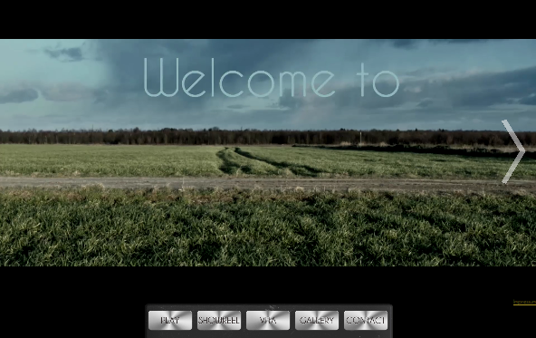
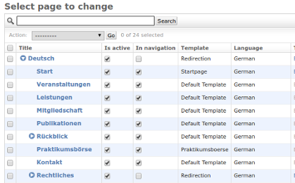
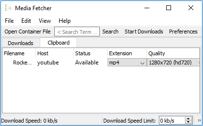
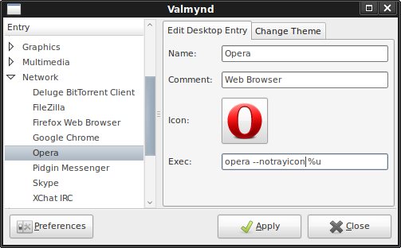

Frontend

Carlos Cut (2017)
Design and Implementation for the Website of a Freelance Video-Cutting Specialist from Leipzig, Germany.Backend

SCRC Leipzig (2018)
Implementation of a Backend based on Django/FeinCMS enabling comfortable Editing and multilingual Content.User Interface Design

Mediafetcher (2013)
Graphical User Interface for the Download-Tool youtube-dl written in Python using the Qt Framework.
